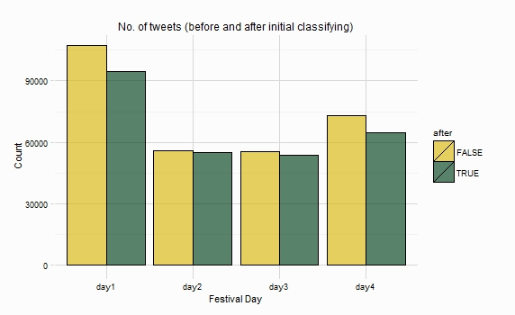

Cheltenham Festival 2015 - Twitter Analysis
classifying
Once the tweets have been cleaned (see here), we need to establish whether they “belong” to the festival. During the process of cleaning, each tweet was parsed looking for runners at the festival, and these runners names were then concatenated, so “hurricane fly” becomes “hurricanefly”, this allows the elimination of tweets that mention the two words “hurricane” and “fly” but not in the correct order that would indicate that the tweet was potentially about the Festival and the horse Hurricane Fly.
The findtweets function searches a tweet for any number of terms, returning a logical TRUE if a term appears, and a FALSE if no term appears. As an example, we’ll use the same 6 tweets seen in the cleaning section.
## [1] "think faugheen has it personally"
## [2] "no point backing douvan in the opener when you get your money back if ya bet loses with billy hills"
## [3] "rt horseandhound denman and kauto star among former stars to parade at cheltenham festival today"
## [4] "p e w yankee for fun odds shaneshill odds clarcam odds hurricanefly odds corgy odds gt looooooongshot cheltenhamfestival"
## [5] "rt boylesports one day left rt amp answer this cheltfest question to win a free bet enter here gt"
## [6] "ruby walsh wager have the huge odds from odds ruby walsh to win any race at cheltenham"Two of the horses that were ‘tracked’ were Hurricane Fly and Douvan, they both feature in the tweets above, below shows the use of findtweets:
findtweets(tweets = eg_tweets, searchfor = c("Douvan", "Hurricane Fly"))## [1] FALSE TRUE FALSE TRUE FALSE FALSE## [1] "no point backing douvan in the opener when you get your money back if ya bet loses with billy hills"
## [2] "p e w yankee for fun odds shaneshill odds clarcam odds hurricanefly odds corgy odds gt looooooongshot cheltenhamfestival"Using the terms that were ‘tracked’ in the searchfor parameter produces a logical vector that can be used to subset tweets, isolating those that do not contain one of the phrases initially tracked. So a tweet containing “hurricane fly” in that order is included in the subset, while a tweet containing “fly hurricane” will be removed. The plot below shows the number of tweets collected on each day, and the number of tweets that remained after the step above was produced. Roughly 25k tweets were removed over the four days.

The findtweets function can also count the number of horses/phrases that appear in each tweet, the more horses/phrases that appear in a tweet, the more confident we can be that the tweet is Festival related. We can add a racing lexicon to the terms we ‘tracked’, this lexicon can be found here, also added to the lexicon are the other runners at the Festival, resulting in a lexicon of about 700 horses, gambling and other racing terms. The plot below shows the distribution of the number of terms in the lexicon mentioned in each tweet.

So there are a few tweets with 15 terms in a tweet, these tweets we can be confident that they are Festival related, if you follow any racing fans then you can perhaps guess what one of these tweets looks like:
“odds douvan bentilimarew odds undesceaux clarcam ew oddsthe druids nephew lostlegendew odds jezki odds anniepower nap pollypeachum ew cheltfest”
Those tweets with just one term mentioned, around 30k tweets, we can be less confident about.